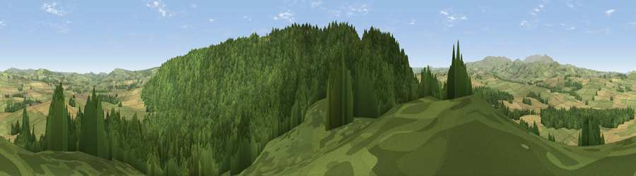

Viewpoint near Whittingham
#12554 in England · top 44% of its area beats it · near WhittinghamThe view, rendered

A 360° render of this exact spot computed from the terrain model, tree cover and land cover — summer colours, afternoon light, calibrated against photographs of famous viewpoints. Real trees, hedges and buildings will differ in detail.
The panorama
Grey silhouette: terrain skyline in each direction (720 bearings, Earth curvature and refraction included). Dashed green: skyline with trees (+15 m) and buildings (+8 m) as obstacles. Blue strip: how far the ground is visible on each bearing.
Where the view opens
Wedge length = distance to the farthest visible ground on that bearing (vegetation-aware). Rings at 10, 25 and 50 km.
What fills the view
58% woodland · 25% grassland · 17% cropland
Angular shares of the visible panorama (visual magnitude), not map area. Landscape diversity 0.42 (0–1 Shannon).
Key numbers
More beautiful places nearby
The staircase of upgrades: each row has a higher view potential than everything closer. Driving times are estimates from straight-line distance, calibrated against real road routing — check an actual route before setting out.
| Place | Direction | Drive | Score |
|---|---|---|---|
| Viewpoint near Whittingham | SSW · 1 km | ~3 min | 77.5 |
| Viewpoint near Whittingham | S · 3 km | ~8 min | 80.5 |
| Viewpoint near Glanton | NNE · 6 km | ~13 min | 82.9 |
| Viewpoint near Eglingham | N · 11 km | ~22 min | 83.8 |
| Viewpoint c12396_7887 | NW · 15 km | ~27 min | 85.7 |
| Viewpoint near Chillingham | N · 15 km | ~27 min | 88.1 |
| Viewpoint near Easington | SE · 113 km | ~137 min | 90.2 |
| The Knoll | S · 525 km | ~476 min | 91.0 |
55.38505, -1.90172 · source: screening · position refined by local search. Computed location — check access rights before visiting.